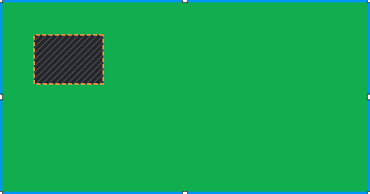

Rectavell 使用手冊
適用於 macOS 14 以上的 0.3.65 開發版，以及桌面版 Chrome 長截圖原型。先從「開始擷取」操作。標為「規劃」的項目會在後續版本提供。
開始擷取
首次開啟 App 時，依 macOS 提示允許螢幕錄製。將滑鼠停在選單列的剪刀圖示上，可看到 Rectavell 名稱和操作提示。左鍵點該圖示，或按 ⌃⌘4 開始智慧框選。按 ⌃⌘6 叫出上次的自訂範圍。按 ⌃⌘3 預覽全螢幕截圖。按 ⌃⌘7 以新畫面叫回上一次完成且有標註的範圍和標註，支援自訂範圍、視窗和全螢幕。若原視窗已關閉或全螢幕擷取的顯示器配置不同，會提示原因。這些模式都會顯示後製工具列，也都可再按 ⌃⌘4 回到同一輪凍結畫面重選，重選時不會寫入剪貼簿。你可先標註，也可按一次 Enter 或空白鍵，直接複製到剪貼簿並退出。按 Shift＋Enter 可開啟下載視窗。按 ⌃⌘5 或右鍵點選單列圖示可開啟工具面板。面板保留常用截圖入口。底部圖示可叫回釘選範圍，「…」選單可啟動 Chrome 擴充功能長圖。按「快速鍵清單」會切換到完整的分組清單，可直接點擊上方的擷取項目。框選和後製的按鍵提示會在相應操作階段使用。按「返回功能選單」或 Esc 即可回到原本的截圖選單。點選功能選單底部的書本圖示，或清單上方的「操作手冊」，即可開啟隨 App 附上的手冊。手冊視窗上方的「開啟線上版」可前往公開版本。之後加入錄影時，也會從這個面板啟動。按 ⌃⌘3、⌃⌘4、⌃⌘6、⌃⌘7 或 ⌃⌘8 擷取時，會先凍結當下的畫面。取用桌面畫面時，包含當時顯示的下拉選單及已開啟的 Rectavell 面板。要排除自己的面板，可先按 ⌃⌘5 收起再框選。從底部「…」選單的「快捷鍵設定」可各自修改六組按鍵。按 ⌃⌘8 可直接進入捲動截圖，面板開啟時也可用 4。若新組合無法註冊，原快捷鍵會保留。 智慧框選啟動時會凍結桌面，自訂範圍直接取用凍結的畫面。單一視窗會在確認時另行擷取獨立視窗，捲動截圖則使用即時內容。開始拖曳或選定範圍後，框外會變暗，所選區域保持原亮度。
- 截區域 直接拖曳，放手即擷取。要維持原尺寸換位置，直接拖曳外框線。四邊中點和四個角的外側控制點可調整大小。把任一角內側的小圓點往內拖，可同時調整四角的圓角；往外拖可縮小圓角。複製或下載的 PNG 會保留透明四角。按住 ⌘ 或 Control 拖曳小圓點可只調整一角。點工具列的單圓角圖示「輸出效果」，即可展開圓角數值，關閉「連動四角」可分別輸入各角的像素值。也可選「選取」（游標圖示），再拖曳框內沒有標註的地方。截圖會改用新位置的畫面，標註隨框移動。截完後按住 Option，在選框內拖曳即可減去一塊；拖曳和放手後都會以橙色虛線和斜紋標出，PNG 中該區會透明。用 ⌘Z 或 ⇧⌘Z 復原或重做。像素放大鏡跟著游標，按住四角或四邊的控制點調整時也會出現。
- 截視窗 游標移到視窗上，輕點高亮框。單一視窗截好後，也可以拖曳四角內側的圓點調整圓角。第一個視窗截好後仍可按住 Shift，等新選框出現再點下一個視窗。按住 Option 點已選視窗可減去，放開修飾鍵後擷取。多個視窗按原位置合成，間隙透明。
- 截全螢幕 一次擷取所有接上的螢幕，按 macOS 的擺放位置合成一張圖。預覽等比縮放，輸出保留原合成尺寸。
- 退出 按 Esc 或點工具列末端的「×」可取消，剪貼簿保持原樣。點選框及工具列以外的地方會複製截圖並退出後製。下載成功或從後製切換至釘選清單時，也會先將目前截圖複製到剪貼簿。 按 Enter 或空白鍵也可複製並退出。若要重選，在後製中再按智慧框選快捷鍵（預設 ⌃⌘4），或直接從框外拖曳。按住 ⌘ 可從框內點視窗或拖曳。重選沿用這一輪凍結的桌面，會保留剪貼簿原內容。

捲動截圖
框外按鈕沿用工具列停靠邊緣，並會優先避開覆蓋在前方的視窗。要截後方視窗時，先將游標移到它露出的部分，再往其框外按鈕移動。 後方視窗難以指到時，把游標放在重疊處，按 Tab 逐一切換，Shift+Tab 反向。外框與標題會顯示目前目標，移動游標後仍可點「捲動截圖」鎖定該視窗。若框外四邊都放不下，才改放在框內邊緣。也可以指向視窗後按 L。
macOS App
- 在 macOS「隱私權與安全性」允許 Rectavell 使用螢幕錄製與輔助使用。
- 打開目標視窗。右鍵點 Rectavell 選單列圖示，選「捲動截圖」，再輕點要鎖定的視窗。也可在智慧框選時指向視窗，點選框旁的「捲動截圖」。
- 出現「已鎖定視窗」後，先選「只截捲動區」或「保留完整視窗」。在「系統設定 → 輔助使用」，選「保留完整視窗」可保留標題列和左側導覽。把游標移到右側清單的內容或捲軸，看到整欄預覽後輕點。
- Rectavell 會從所選欄位的第一列截到最後一列，再恢復原位置並開啟後製。擷取時預覽保持靜止，按 Esc 可取消。
「保留完整視窗」會延長你選中的欄位，其他欄位保留當下的可視畫面，原先畫面下方留白。系統本身的選取高亮會照原樣保留。此模式支援提供可控制垂直捲軸的 App，且視窗需完整放在同一螢幕。
Chrome 免外掛模式
- 首次使用請在 macOS 的「隱私權與安全性」允許 Rectavell 使用螢幕錄製與輔助使用。這個模式可在不同 Chrome Profile 使用。
- 在 Chrome 開好目標分頁。右鍵點 Mac 選單列的 Rectavell 剪刀圖示，選「捲動截圖」，再輕點 Chrome 視窗。也可在智慧框選時指向目標視窗，點選框旁的「捲動截圖」。
- 整頁框住網頁內容的可視區，從左上往右下拖曳，排除分頁列與網址列。指定捲動區只框容器的可視內容，從左上開始，避免把旁邊的捲動區或外部邊欄框進來。
- 放手後會捲動並拼接。完成後直接回到 Rectavell 後製，可標註、複製或下載 PNG。擷取中若要停止，點選單列的停止圖示。
- 長截圖圖解包含實測成品。
原生原型支援單螢幕內的 Chrome 視窗及垂直捲動，以畫面重疊像素接合。已驗收固定頁首與區段 sticky 標題各出現一次、測試頁的底部浮動按鈕只保留一次。中途切換視窗、捲動區內容持續變動或重疊不明確時，可能停止擷取。水平捲動、複雜浮動元件及跨螢幕視窗待驗證。上限為 80 段、長邊 16,000 像素及 3,200 萬像素。
Chrome 擴充功能模式
需要自動找捲動容器、擷取可見區，或處理雙向捲動時，可在 Rectavell 選單的「…」選「Chrome 擴充功能長圖」。每個使用這個模式的 Chrome Profile 都要先載入擴充功能並允許網站存取。開發版安裝方式為到 chrome://extensions/ 啟用開發人員模式，選「載入未封裝項目」，指定專案的 chrome-extension 資料夾。從 Mac 啟動後，可以按「選整個網頁」，或點容器的捲軸或內容，再選「截完整內容」或「只截可見區」。
截圖後製與輸出
截圖成功後，單列工具列會出現在原選框旁。自訂範圍和單一視窗進入後製時保留原框的位置和大小。滑過圖示可看提示。語言預設跟隨系統，支援繁體中文與英文，也可在「…」選擇。拖曳工具列握把可換邊，App 會記住最後停靠的邊緣。停靠上、下時橫排，停靠左、右時直排。當外部空間不足時，工具列可移入框內，輸出仍是乾淨的圖像。從設定可調整選框顏色與粗細，預設為系統藍色。 在「輸出效果」開啟陰影，展開後可設定模糊、不透明度和水平、垂直位移。也可直接拖曳外框外可見的陰影調整方向與距離。加上可見陰影時，PNG 四周會保留額外透明邊界。
- 標註 馬賽克、實色遮蓋、方框、圓形、線條、自由筆、箭頭及文字。自由筆以不規則線條標示，緊接在線條工具後；文字圖示是 T。新截圖進入後製時預選方框。可換色的標註工具共用同一個色彩，預設紅色；切換工具時會沿用目前色彩，用滑桿或數字調粗細，點線型樣本切換實線、虛線或點線。標註預設 90% 不透明度，可在色點面板用滑桿或百分比調整。實色遮蓋的每種顏色都完全不透明。要改既有遮蓋，先點游標箭頭，再點遮蓋與色點。
- 原地文字 點圖內的位置直接輸入，Return 換行，⌘Return 或點別處套用。輸入後可拖動，連點即可再次編輯。
- 編輯標註 繪製線條、箭頭或移動任一標註時，按住 Shift 可吸附到水平、垂直或 45°。拖曳途中按下或放開 Shift，預覽會即時更新。工具及樣式會保留。滑過既有標註可暫時移動或調整，也可切換選取工具。用四角和四邊中點的八個控制點調整方框、圓形、遮蓋與自由筆等標註，線條和箭頭可拖曳端點，按住 Shift 會以另一端為基準吸附到水平、垂直或 45°。按住 Option 拖曳標註可複製到新位置，從空白處 Option 拖曳則減去範圍。選取標註後按 ⌘D 可就近複製。按住 Shift 點選多個標註，再按 Backspace 或 Delete 可一起刪除。拖其中一個已選標註可移動整組；按住 Option 拖曳或按 ⌘D 可複製整組，相對位置會保留。工具列的復原、重做和清除獨立成一組，也可按 ⌘Z 復原、⇧⌘Z 重做。工具列的橡皮擦圖示「清除所有標註」可一次移除標註、遮蓋和馬賽克，按 ⌘Z 可整組復原。截圖範圍、減去區域、圓角與陰影會保留。輸出後標註會合成為圖片像素。
- 輸出 點複製圖示或按 Enter／⌘C 送到剪貼簿。點下載圖示可選擇資料夾並儲存 PNG。未標註即可直接輸出。
釘選範圍與標註範本
- 釘選範圍（開發版） 從工具列的圖釘入口儲存目前自訂座標。叫回清單後，滑過項目會預覽選框，點擊套用。要合併或減去時，按住 Shift 點第一個項目開始，再用 Shift 加入、Option／Alt 點擊已選項目移除，或用 Option 拖曳從已選區域減去一塊。每次手勢後都可以放開按鍵，最後按 Return 擷取。顯示器改接、不同縮放與合成邊界仍需實機驗收。
- 標註範本 在後製工具列點「標註範本」，為目前標註命名並儲存。新截圖中開啟同一面板，點範本名稱可手動套用；位置依新截圖尺寸調整，各元素仍可編輯，整組可用 ⌘Z 復原。範本只保存標註資料。
- 自由選框加選（規劃） 一般選框目前可用 Option 減去區域。直接用 Shift 在一般選框加畫新區域仍在規劃。
畫布與輸出樣式（規劃）
把多張截圖或本機圖片加入畫布，共用具名的固定尺寸預設，例如 1024 × 1024。預設置中，小圖保持原尺寸，大圖等比縮小以完整放入。可改用填滿裁切或原尺寸裁切，再逐張移動裁切焦點。預設可指定內距、透明或純色背景、圓角與陰影。視窗可獨立擷取取得透明背景，任意圖片的主體去背另行驗證。圓形遮色片列入規劃，三角形、星形仍待驗證。
原生版目前支援剪貼簿與 PNG。JPEG、WebP、PDF 和超長圖分段待開發。檔名規格採模式加年月日、時間及三位毫秒，例如 capture-custom-area-20261125104035001.png 或 capture-app-screen-20261125104135016.png，重名時保留既有檔案。
第二階段：錄影（規劃）
先圈選範圍。依螢幕可擷取的實際像素推薦 Full HD（1920 × 1080）、4K UHD（3840 × 2160）或自訂範圍。用快捷鍵或可取消的倒數開始，也可用快捷鍵或選單停止。錄完可修剪起迄，為指定時段加入文字、形狀、箭頭或遮蔽，並套用截圖共用的畫布樣式。擷取範圍和成片尺寸可分別設定。
Windows（候選平台）
先驗收 Mac 工作流程，再評估 Windows 11 原生擷取原型。自訂區域、視窗與全螢幕先行。Chrome 擴充功能、標註範本格式、輸出規則與教材可共用，原生框選、快捷鍵、多螢幕 DPI 及錄影需在 Windows 上獨立驗證。